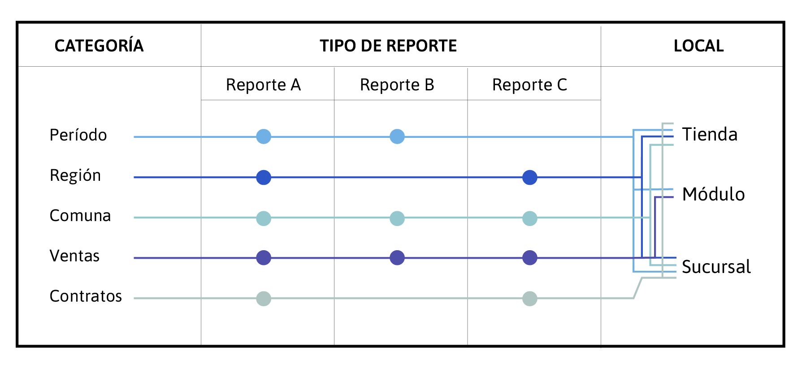

El primer paso para comprender cómo está estructurado el levantamiento de información y empezar a desarrollar la visualización de éstos, es detectar el usuario que revisará estos datos, entender cuáles son sus procesos mentales al momento de observar la información, los flujos de interacción y el trabajo que realizan posteriormente.
Luego, se deben entender los datos en profundidad, el tema que abordan y las variables presentadas. Saber detectar las unidades en las que están medidos los indicadores así como también los valores mínimos y máximos. Para esto, es ideal crear un mapa en el cual se despliegan los contenidos para comprender su estructura y tipología (texto, números, fechas, entre otros). Al crear este mapa se pueden analizar las filas y columnas que contiene y por lo tanto, observar las relaciones entre los datos. Generar hipótesis sobre los descubrimientos que se podrán realizar cuando se visualicen los datos. Una vez ordenados los contenidos, se deben cruzar las variables relevantes para comprender las relaciones que hay entre los distintos niveles de información y cuándo efectivamente hay información disponible. De esta manera, se puede tener una idea general de la información con que se cuenta y poder pasar a las siguientes etapas.
A continuación se muestra el ejemplo de un mapa tipo de una empresa x para el análisis de los datos. En la primera columna se encuentran las variables con las que se tomaron los datos como el período (año, mes, día), la locación (región, comuna) o el tipo de operación (venta o contratos). En el otro lado del mapa, hay otra subdivisión de categoría de los datos, por ejemplo si corresponden a tienda, módulos o sucursales. En el centro del mapa, van los diferentes reportes que se levantaron en esta empresa. Una vez ordenados los datos según su tipología, se pueden empezar a marcar dónde están los cruces más importantes para analizar la información. También, esto servirá para detectar que cruces son irrelevantes o cuáles no tienen información disponible. De esta manera, se evitan confusiones cuando el usuario que navega los datos se encuentra con información errónea o inexistente.

Con este mapa se puede decidir qué información se muestra y donde se pone énfasis para un eficaz análisis de los datos. Una vez concluida esta etapa, será posible empezar a construir el producto final del soporte en el que estarán disponibles los datos en la web al que llamaremos Dashboard de aquí en adelante.
ETAPA 1
ETAPA 3